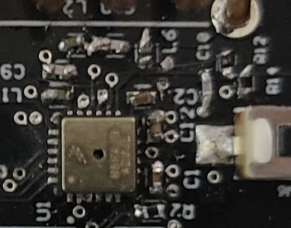

Uses
Introduction
I wanted to make a remote that could rest in low power and send 433Mhz RF signals.
Goals
|
Learn how to make a PCB. |
|
Hand place and solder PCB parts. |
|
Learn more about hardware development, hardware debugging, and hardware problem solving. |
|
Learn more about power consumption and power saving. |
Parts List
Total Cost: ~$300
PCB Schematic
PCB


End Product Mock Up
Testing to see how the buttons would feel.

Mock up what the final design will look like to figure out if it will feel okay?
Test how good this would feel in hand. Aka 3D print and hold and pretend to push buttons. Felt like a function remote, so I ordered PCBs and components.
Build a PCB

Hand soldered a PCB together.
PCB Fixes
Low power mode can only be woken up from a signal coming from 3v being pulled down to ground. Had to modify the board
Fix poor RF

Moved the antenna to not go over the ground and 3v planes. Antenna now sticks out the back

The hand soldering didn't look amazing. Could be poor connections.

Built a board with solder paste, solder mask stencil, tweasers, and a hot air soldering rework station.
Test New RF
RF is working great after implementing the chagnes mentioned above.

Build A Case
Remote shell design.
Button and circuit board in case

Push button to go in case, over the circuit board. Wider on the bottom so it can't move or fall out of the case once the circuit board is in.
Print and assemble board

Adding LED Diffuser
I made the case black and decided to add an LED diffuser that comes through the case.
LED diffuser, to go in case, over the circuit board. Wider on the bottom so it can't move or fall out of the case once the circuit board is in.

Button, LED diffuser, and circuit board in case
Touch Tunes RF
I decided to make this remote function for something. I decoded the touch tunes signals in order to generate my own on the fly for the different pins and information being sent.

Remote must be woken up from the sleep state before use. This remote will go back to sleep 10 seconds after the last use.


When you select change your volume area, the LED will flash out which area is newly selected.
Volume areas can be different areas around a bar such as the patio speakers, dining area speakers, or main bar area speakers.

There are 256 different pins. Each juke box can have a different pin. Once you find your pin, the Volume Up, Volume Down, Pause/Play, and Skip song will use your selected pin. This sends a volume up signal with every chagne of the pin so that the user of the remote can verify when they have the correct pin. Most Touch Tunes work on Pin 0.
How to find the pin of your juke box: Starting at Pin 0, cycle up pins using Pin Up - Fast. Once you pass a pin that interacts with your juke box, you can go back over that pin with Pin Up/Down - Slow to set your remote to the correct Pin.
Reset - Puts Volume Area back to Area #1 and the Pin Back to Pin 00